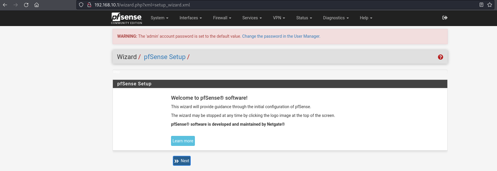
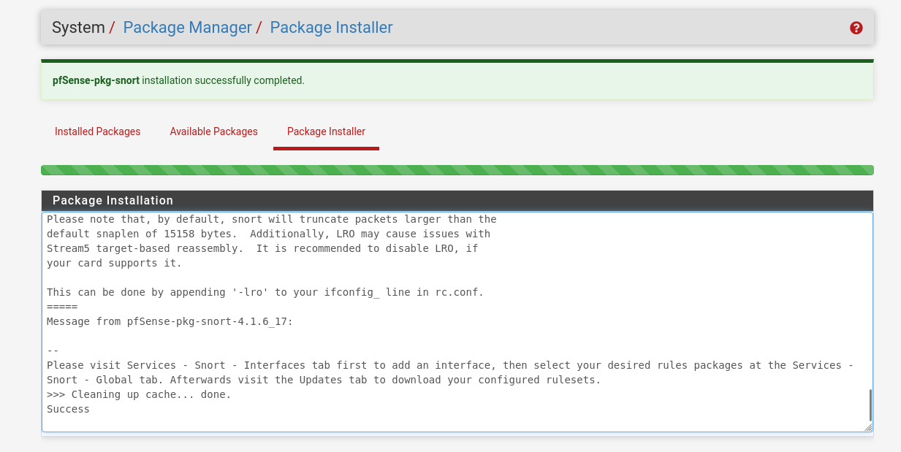
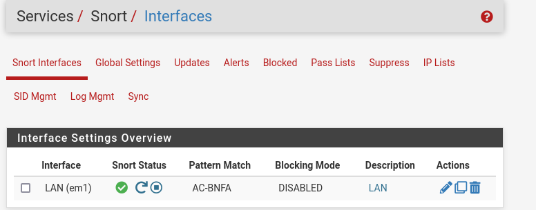
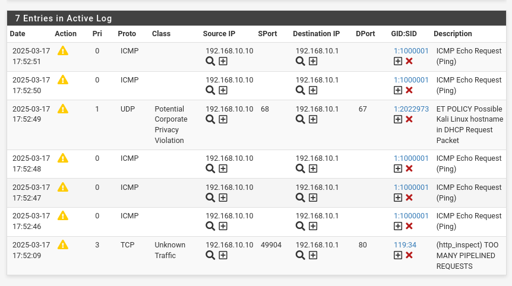
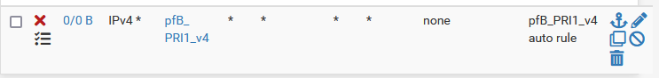
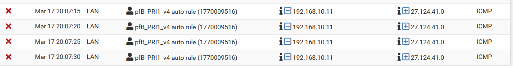

Introduction!
In this post, I’ll walk you through the steps I took to set up pfSense, Snort, and pfBlockerNG, turning my system into a robust and secure network environment. These tools, when configured properly, provide both intrusion detection and prevention (IDS/IPS) as well as firewall protection, helping secure your network from a range of cyber threats.
Let's start!
pfSense has a great feature called packets, which allows you to directly download Snort into your pfSense machine and set it up from the pfSense GUI (Snort doesn't have any native GUI).
Step 1:
The first step in setting up a secure network environment is installing pfSense. pfSense is an open-source firewall and router software that offers advanced features for managing and securing your network. It provides a web interface that makes it easy to configure network settings, firewall rules, and more. After successfully installing pfSense on a virtual machine, it's time for step 2.
Step 2:
Next, I installed the Snort package. Snort is a powerful open-source intrusion detection and prevention system (IDS/IPS) that can analyze network traffic in real-time. It helps detect a wide variety of malicious activities, from denial-of-service attacks to network scans. By configuring Snort on pfSense, I could keep an eye on any suspicious behavior happening within my network.
After downloading the Snort package, I began by configuring it for global policies. This step involved setting up the general parameters that Snort would use to monitor traffic across the network. I also updated the Snort rules to ensure I had the latest security signatures and detections.
One crucial part of configuring Snort was setting the sniffing interface. This is the interface through which Snort listens for network traffic. I made sure to select the correct interface to monitor the traffic coming into and out of the network.
Step 3:
With Snort installed and configured, I created a simple rule to test its functionality. The rule I wrote was designed to alert me whenever someone attempted to ping (send an ICMP Echo Request) to my machine. The Snort rule I wrote looked like this:
alert icmp any any -> any any (msg: “ICMP Echo Request (Ping)”; itype:8; sid:1000001; )This rule instructs Snort to generate an alert whenever it detects an ICMP Echo Request (ping) from any source to any destination. The sid:1000001 is a unique rule ID that helps identify and reference this particular rule. When I tested this rule by sending a simple ping to the network, Snort triggered the alert, confirming that the system was properly detecting network activity as intended.
Step 4:
With Snort configured and working as an IDS, it was time to set up pfBlockerNG. pfBlockerNG is a pfSense package that enhances firewall protection by allowing you to block traffic from known malicious IP addresses and geographic locations. It provides an easy way to manage firewall rules and update block lists automatically.
I began by configuring pfBlockerNG rules. These rules allow you to filter traffic based on various criteria, such as country, known blacklists, or custom IP ranges. After setting up the firewall rules and ensuring they were updated, I performed a test to confirm that pfBlockerNG was working as expected.
After setting up the firewall rules and ensuring they were updated, to verify that pfBlockerNG was blocking traffic correctly, I sent ICMP packets to one of the IP addresses that was included in the block list. Sure enough, the firewall prevented the packets from reaching their destination, confirming that pfBlockerNG was successfully blocking traffic from the unwanted address.
Everything worked! That was such a fun experience playing with those VMs and running a small lab. I’ll update this in the future for sure, but for now, that's all I've got!